Speakers
Dr. Jans Aasman started his career as an experimental and cognitive psychologist, earning his PhD in cognitive science with a detailed model of car driver behavior He has spent most of his professional life in telecommunications research, specializing in intelligent user interfaces and applied artificial intelligence projects. Jans is currently the CEO of Franz Inc., the leading supplier of scalable Graph database products that provide the storage layer for powerful reasoning and ontology...
Ibrar Ahmed, Principal Engineer at pgEdge, brings 25 years of experience in software design and open-source development, particularly PostgreSQL. With a strong background in system-level embedded development, Ibrar has made impactful contributions during his tenure at companies like EnterpriseDB, Percona, and Bitnine. Since 2006, he's been instrumental in enhancing PostgreSQL's core engine, driving performance improvements, and refining essential modules.
His expertise spans MySQL,...

Roller Angel spends most of his time helping people learn how to accomplish their goals using technology. He's an avid FreeBSD Systems Administrator and Pythonista who enjoys learning all the amazing things that can be done with Open Source technology, namely FreeBSD and Python, to solve issues. He's a firm believer that one can learn anything they wish to set their mind to. He uses Configuration Management software on FreeBSD written in Python every day as part of his job as a...

Kenny has worked with UNIX-like operating systems since his introduction to them while serving in the U.S. military in the late 1990s. Kenny has been involved with the Linux community in various capacities such as teaching Linux for a variety of training organizations, deploying Linux in local government institutions up to large Universities, as well as in various large-scale businesses. Kenny enjoys working with open platforms and finding potential new uses for them in a variety of...

JJ works at IBM on the IBM cloud as a Developer Advocate. He’s focusing on the IBM Kubernetes Service trying to make companies and users have a successful on boarding to the Cloud Native ecosystem.
He lives and grew up in Austin, Texas. He enjoys a good strong stout, hoppy IPA, and some team building Artemis, madding Dwarf Fortress or Rimworld or possibly pair programming cluster Factorio. He’s a member of the Church of Emacs, though jumps into Vim on remote machines. He usually...
Noaa is a full-stack developer, community manager, and tech writer who wishes to encourage developers to deepen the decisions we make during the development processes, research about the technologies we use and share our knowledge. She started her journey in the 8200 Unit of the IDF Intelligence forces where Noaa took her first steps in software development. In the last 4 years, her work has mainly included Angular, .NET, VanillaJS, and Typescript. She currently develops in React, NodeJS and...

Josh Berkus spends his time messing around with containers, automation, and community-building for Red Hat Inc. Prior to that, he spent nearly two decades working on PostgreSQL. From his home in Portland, he cooks, makes pottery, and looks after a cat.
Aman Bhullar has over 25 years’ experience in technology implementations and consulting. He currently oversees the strategic planning and modernization initiatives of information technology, information security and data management for the Los Angeles County Registrar-Recorder/County Clerk. Mr. Bhullar has provided vision and leadership in the development and implementation of applications and infrastructure supporting the department’s more than 1,500 employee workforce that serves nearly 5....
Aeva Black is an incurably queer geek with a penchant for ancient languages, who was briefly a physics major and may have solved time travel¹. Today, they're an open source hacker in Azure's Office of the CTO, focusing on supply chain security and community safety while holding seats on the OSI Board and the OpenSSF TAC. On a previous timeline, they were a database admin and hardware hacker who wrote a lot of code and founded the OpenStack Ironic project. (¹ not really)
Ever the polymath, Seamus played Jazz piano at bars, worked on the search for the Top Quark at Fermilab, & wrote some of the earliest physics and rendering systems for 3D games. The success of these games eventually led to being one of the first employees of Dreamworks SKG, where his epic open world Jurassic Park game shipped before it was finished and was instead an epic disaster. He got a job offer from BillG so he went and hid out at Microsoft. There, in response to Sony's...
Matthew has held dual roles of Senior Architecture and Senior Instructor at Percona for over 9 and a half years. During that time, he’s traveled (almost) around the world delivering top-notch MySQL training, and helping clients from 20 person start-ups to 10,000+ MySQL server corporations. In his spare time, he enjoys recurve archery, video games with his kids, and competitive swing dancing.

Michelle Brenner (she/her) is a Senior Software Engineer with 13 years of experience. She started in engineering support and now leads large-scale development projects. A Philadelphia native who currently calls Los Angeles home, she is an art school graduate and a self-taught engineer. During her career, she has most enjoyed creating software that enables others to succeed, from digital artists to restaurateurs to fellow engineers.
Michelle has shared her technical travails, team-...
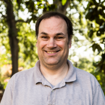
Michael Brewer is a Web Developer Principal for the Franklin College Office of Information Technology at The University of Georgia; he also serves as Secretary for the United States PostgreSQL Association (PgUS). He has worked in open source for over two decades and has spoken at regional, national, and international conferences.
Amanda Brock is CEO of OpenUK, the UK organisaton for the business of Open Technology; Board Member, Open Source Initiative; UK Cabinet Office Open Standards Board Member; Advisory Board Member: KDE, Free BSD, Planet Crust, Everseen, and Mimoto; Charity Trustee, Creative Crieff and GeekZone; and European Representative of the Open Invention Network.
Amanda was awarded the 2022 UK Lifetime Achievement Award in the Women, Influence and Power Awards,included in Computer Weekly’s Most...
Jaime has been contributing to postgres the last 18 years. Mainly as patch reviewer and bug hunting, and a few little patches. Jaime also has experience with HA clusters and complex configurations from his time at 2ndQuadrant. Currently, Director of Professional Services at Systemguards, the only Latin America company providing high level support of postgres completely in spanish.

Jorge Castro is a community manager, specializing in Open Source. He is basically a cat herder - a combination of engineering, developer relations, and user advocacy. Jorge graduated with a degree in Telecommunications from Michigan State University and rode with the 11th Armored Cavalry Regiment for four years. He first entered the technology field at SAIC and then moved to system administration at the School of Engineering and Computer Science at Oakland University in Rochester Hills,...
Davide Cavalca is a Production Engineer at Meta on the Linux team. Davide has been working in the systems space for over 15 years, always with a strong focus towards open source and automation.
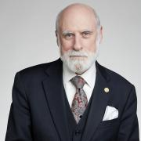
Vinton G. Cerf is vice president and chief Internet evangelist for Google. Cerf has held positions at MCI, the Corporation for National
Research Initiatives, Stanford University, UCLA and IBM. Vint Cerf served as chairman of the board of the Internet Corporation for
Assigned Names and Numbers (ICANN) and was founding president of the Internet Society. He served on the US National Science
Board from 2013-2018.
Widely known as one of the "Fathers of the Internet,...

Alison is an automotive systems programmer and kernel engineer and has worked at Nokia, Mentor Graphics, Peloton Technology and Aurora Innovation. In 2014-2015, she collaborated on-site with a customer in Germany. Alison has spoken at events including ELC and ELCE, USENIX, LibrePlanet, linux.conf.au, Automotive Linux Summit, SCALE and Maker Faire. She lives in Mountain View , CA where she rides bikes, attends concerts, drinks beer and studies German.
Demetris Cheatham is the Senior Director for Diversity and Inclusion Strategy at GitHub where she lead the strategy across four pillars: People/HR, Platform, Philanthropy and Policy. Beyond strategy development and execution, she spends her time working with external partners to advance diversity and inclusion within the open source ecosystem. In 2021, she launched All In, an open source community whose mission is to advance DEI in open source through access, community, equity and data....
Senior software engineer, frontend web developer, senior website manager, technical support engineer, developer advocate, conference organizer, diversity committee chair, program organizer, social media manager, and copy editor are just some of the technical hats I've worn in 10+ years of professional experience working as sole project manager as well as in collaboration with hybrid/remote, distributed, & global teams. For a personal look into who I am and my involvement in the open...
Mary Cordova is a member of the SplunkTrust, experienced Splunk users from around the globe recognized for their exceptional contributions to the Splunk Community. She has worked in the threat detection and response space for various industry leaders in gaming, media and entertainment for the past decade and can be found lurking around several L.A. based InfoSec communities.
Kat Cosgrove is a Developer Advocate, a CNCF Ambassador, and an actual cyborg. Her professional background has run the gamut from bartender, to video store clerk, to teacher, to software engineer. She credits this wide-ranging experience for her success as a speaker, developer, and advocate. You can usually find her speaking about DevOps or cloud native technologies, particularly 101-level content, in pursuit of her goal of increasing accessibility for these tools.
Ben Cotton is a meteorologist by training, but weather makes a great hobby. Ben works as the Fedora Program Manager at Red Hat. He is an Open Organization Ambassador and author of Program Management for Open Source Projects. Ben co-founded a local open source meetup group, and is a member of the Open Source Initiative and a supporter of Software Freedom Conservancy.
Chris Crocco is a Staff Consulting Solutions Engineer at Splunk with a focus on helping customers solve IT and Observability problems using the power of data. When he's not nerding out on Splunk, Chris likes to enjoy all the best parts of living in Denver including rock climbing, hiking, and brewing his own beer (yes, really!).
Kyle Davis is the Senior Developer Advocate for Bottlerocket at AWS. Kyle has a long history with software development and databases and was a founding contributor to the OpenSearch project. When not working, Kyle enjoys 3D printing, and getting his hands dirty in his Edmonton, Alberta-based home garden.
Zeke Dean, a highly experienced streaming analytics architect with expertise in both Kafka and Apache Druid. An expert at wearing multiple hats to satisfy customers in their specific roles. Delivered highly scalable code and distributed systems. Numerous years of experience building big data systems for enterprises all over the world -- from banks in the Middle East and india to major publishing houses in the United States and a payment platform in Japan . Zeke now works with businesses to...
Niall is a Developer Advocate for Camunda’s Open Source platform. This means he spends his time helping developers learn how to use Camunda to orchestrate their backend and front-end services through workflow automation. He does this by speaking at conferences and user groups, building examples and reviewing architectures.
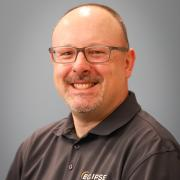
Frédéric Desbiens manages IoT and Edge Computing programs at the Eclipse Foundation. His job is to help the community innovate by bringing devices and software together. He is a strong supporter of open source. He worked as a product manager, solutions architect, and developer for companies as diverse as Pivotal, Cisco, and Oracle. Frédéric holds an MBA in electronic commerce, a BASc in Computer Science, and a BEd, all from Université Laval.
In the past, Frédéric spoke at several...
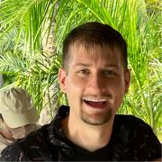
I work on infrastructure tools that enable innovation. I specialize in Kubernetes, Terraform, public clouds, and distributed systems. You can also find me buried deep in a book, preparing a technical talk, or out for a hike in the hills of Los Angeles.
Subash D’Souza works at the cross-section of open data, and education. He is the Founder of Data Con LA, the largest independent data conference in the SoCal region. He is also the founder of Data 4 Good, a public-private nonprofit think tank created to work with various organizations using data to tackle social problems working on issues ranging from homelessness to digital equity technology innovation, data and analytics, and public-private partnerships. He is currently the Director for...

Simon Elmir started using Linux in the early 00's, building his early skills on computers built from hand-me-down machines and scavenged parts. He's worked as a sysadmin in places like computer labs, datacenters, and web hosting companies. Most recently, Simon works as a Production Engineer on infrastructure for artificial intelligence systems at Meta (Facebook).
I’m passionate about helping organizations work in new ways and adopt technologies to achieve value faster. Over the past "more than I care to admit to" years, I held both technology leadership and consulting roles in organizations ranging from startups to global Fortune 100 companies.
Today, I'm fortunate to work for Mattel (the Barbie, Hot Wheels, etc people) as the Director IT - OCM and Change Enablement where I lead an amazing team in accelerating the value of...
Dr. Dawn Foster works as the Director of Data Science for CHAOSS where she is also a board member / maintainer. She is co-chair of CNCF TAG Contributor Strategy and an OpenUK board member. She has 20+ years of experience at companies like VMware and Intel with expertise in community, strategy, governance, metrics, and more. She has spoken at over 100 industry events and has a BS in computer science, an MBA, and a PhD. In her spare time she enjoys reading science fiction, running, and...

Stephen Frost is a PostgreSQL Major Contributor and Committer who implemented the PostgreSQL role system and column-level privileges, and who has made contributions to PL/PgSQL, PostGIS, the Linux kernel, and Debian. He has broad experience with the PostgreSQL authentication and authorization system, Multi-Version Concurrent-Control (MVCC), performance tuning (both system-wide and for specific queries), hacking on PostgreSQL itself, the PostgreSQL community, and PostGIS.
Bill Garrett is a Principal Solution Architect at CloudBees, where he's worked for 5 years. Prior to that he’s worked in the DevOps space since before we even had the term “DevOps”. Things you may not know about Bill include that he likes to dress up as Jenkins and is a licensed wedding minister. Bill has not combined these two hobbies… yet.

Jeff has worked with free software since the mid-1990s and has practiced the discipline of large-scale network management since 2000. His current role as Principal Technical Product Manager at The OpenNMS Group lets him continue both these pursuits.
I am the founder and lead of the Regolith Desktop project.
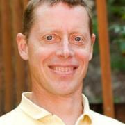
Joel Groen is a member of the product team at Chronosphere. Joel is a product veteran and has guided a series of early stage companies to success in emerging markets. He has a passion for building new products in conjunction with disruptive technology.
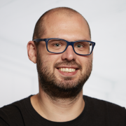
Kenny started using MySQL in the early 2000's as DBA/Systems Engineer, spent 8 years at Percona as MySQL Consultant/Architect & Practice Manager and is currently MySQL Product Management Director at Oracle.
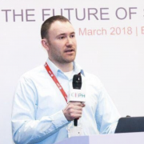
Michael Hackett is a storage and SAN expert in customer support. He has been working on Ceph and storage-related products for over 12 years. Apart from this, he holds several storage and SAN-based certifications and prides himself on his ability to troubleshoot and adapt to new complex issues. Michael is currently working at Red Hat, based in Massachusetts, where he is a principal software maintenance engineer for Red Hat Ceph and the technical product lead for the global Ceph team. Michael...

Rob is an engineer at Xolv. He received his B.S. in Computer Information Systems from Chapman University. In his free time, he volunteers on SCaLE Tech Team and is a nixpkgs maintainer. When he’s not contributing to open source projects, you can catch him participating in sailing races around California or tinkering with digital modes on his HAM radio.
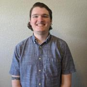
Graduating from West Texas A&M and getting his Masters at Georgia Tech Daniel loves software development, and also has a strong interest in Open Source Software. After working at various companies Daniel got a job at DigitalOcean on the Storage team where he works on an internal platforms team building a Kubernetes platform to better help container orchestration for the storage team at DigitalOcean.
Frits Hoogland is a developer advocate at Yugabyte, where he works on cloud native open source technology and performance challenges. He’s an IT professional who believes in applying a scientific approach to performing IT tasks. He spent 25 years working predominantly with Oracle database technology solving performance issues for some of the world’s largest companies. Frits has also worked for the highly-acclaimed Enkitec corporation, co-wrote a book about Oracle Exadata, and helped the...
Dan Isla is the VP of Product at itopia inc. Before joining itopia, Dan worked at the NASA Jet Propulsion Laboratory, building rovers and launching rockets, he also spent 4 years at Google in Irvine as a Cloud Solutions Architect. Dan is the creator of the Open Source project, Selkies (https://selkies.io), which enables stateful workload orchestration on Kubernetes and per-user containerized environments with GPUs and WebRTC streaming.
Dan has been...
Antoni Ivanov is Staff Engineer specializing in scalable big data systems and data analytics infrastructure. Antoni has been working on building VMware data analytics platform from its beginning. Antoni has been the technical lead of the recently Open source project Versatile Data Kit for the past two years. Versatile Data Kit has transformed data engineering at VMware towards being code-first, fully automated, and decentralized. Now he is working to bring that as open source software to all...
Stephen Jazdzewski has over 42 years of experience in computers and electronics. Today he owns his own consulting firm and specializes in Software Architecture, Programming, Data Modeling, Databases, TDD, Interfaces, and IT Architecture.
At the start of his career in the early 1980's, he ported Peachtree accounting software to the Apple ][. He then became the first employee of Central Point Software in 1981, which developed Copy II+ and PCTools. He went on to write software for...
Frank Karlitschek is a long time open source developer and former board member of the KDE e.V. In 2016 he founded Nextcloud to create a fully open source and decentralized alternative to big centralized US cloud companies. In 2012 he initiated the User Data Manifesto to define basic human rights regarding personal data. Frank was an invited expert at the W3C to help to create the ActivityPub internet standard. Frank has spoken at MIT, CERN, Harvard and ETH and keynoted several conferences....

Jonathan Katz is a Principal Product Manager Technical at AWS for Amazon RDS. Prior to this, he was the VP of Platform Engineering at Crunchy Data, focused on managing PGO, an open source Postgres Operator.
Jonathan is a member of the PostgreSQL Core Team and involved in various governance aspects of the PostgreSQL Global Development Group. He serves as a Secretary and Director of the nonprofit PostgreSQL Community Association of Canada and is a Director of the nonprofit United States...

Kohsuke Kawaguchi is the creator of Jenkins and co-CEO of Launchable. He is a well-respected developer and popular speaker at industry and Jenkins community events. Kawaguchi’s sensibilities in creating Jenkins and his deep understanding of how to translate its capabilities into usable software have also had a major impact on CloudBees’ strategy as a company, where he served as CTO. Before joining CloudBees, Kawaguchi was with Sun Microsystems and Oracle, where he worked on a variety of...
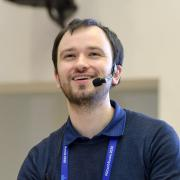
Alexander Korotkov is a PostgreSQL Major Contributor & Committer, and PhD in computer science. He contributed many fields of PostgreSQL including indexing, statistics, concurrency, extensibility, and more. In 2015 Alexander co-founded and became the technical chief and development officer at Postgres Professional in Moscow. He is the inventor behind OrioleDB who seeks to deliver the solutions of PostgreSQL wicked problems.
Evan is LPI Director of Community Relations and one of the organizations' co-founders. A longtime advocate of open computing and open source, he was ZDNet's first Linux-specific columnist and has participated in numerous conferences, nonprofits, policy initiatives and white papers. Before re-joining LPI in 2017 he worked for the United Nations refugee agency (UNHCR) working to bring Internet access and work opportunities to refugee centres in Egypt, Uganda and Kenya. He was co-...
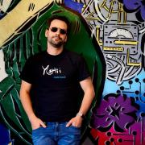
I love Coding, I grew up in a small town in Chile and one weekend, 16 years ago, I had the flu and could not go out. I decided to learn how to code in Python and that was the beginning of the road that would moved us all to the Northern California so that I could join the Production Engineering team at Instagram. Also like eating, drinking and cooking (in that order).
Dan here. A few things about me… First of all, the only thing I find more awkward than writing a bio about myself is asking someone else to write one about me. So first person it is! I’m a software engineer at heart. Two years ago I started a company with another engineer, my co-founder Ori Keren. I pulled the short straw so actually at the moment I’m responsible for customer success, marketing and sales. Which is crazy because I had never done any of those things before LinearB. I wish I...
Tony Loehr is the Developer Advocate for Cycode. Their prerogative is to make it easy for developers to use the Cycode platform, and to help protect data through knowledge sharing. They have professional experience with engineering, marketing, and sales and bring a unique perspective on how to implement comprehensive cybersecurity solutions. They value being a lifelong learner, and aim to help teach cybersecurity solutions to people with varying degrees of technical knowledge. In their free...
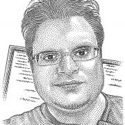
Federico Lucifredi is the Product Management Director for Ceph Storage at Red Hat and a co-author of O'Reilly's "Peccary Book" on AWS System Administration. Previously, he was the Ubuntu Server product manager at Canonical, where he oversaw a broad portfolio and the rise of Ubuntu Server to the rank of most popular OS on Amazon AWS. A software engineer-turned-manager at the Novell corporation, he was part of the SUSE Linux team, overseeing the update lifecycle and...

Ell Marquez is a proud advocate of Hacking Is Not and Crime and Operation Safe escape. She has traveled the world for five years, educating security practitioners on subjects from on-prem infrastructure to the cloud and everything in between. As part of her journey in 2022, Ell transitioned to GRIMM with the focus on researching and training organizations on strengthening their defenses against the latest cyber threats.
Advocate for distributed open-source hardware. Experience in software engineering, data science, open source, agile methodologies, DevOps, configuration management, technical writing & documentation, and model-based systems engineering.
I've been technically leading, mentoring, and managing a team, helping companies and people with current and future needs, starting from SW engineering to everything database, currently focused around MySQL. I work for Pythian doing what I love, in a challenging environment. I'm passionate about leadership, mentoring, and data.
Profian CTO and Enarx co-founder, Nathaniel has been engineering systems at scale for more than 15 years, with an emphasis on cryptography and security. Previously the Virtualization Security Architect for Red Hat, he lives near Raleigh, NC.
Sage is a security analyst at Red Hat, focusing on storage security, both for containers and for distributed systems. They did a master's degree at UCSC, and have an undergraduate degree in math and computer science from Umass Amherst. In their free time, they enjoy hiking with their dog.
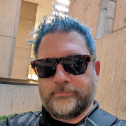
Jeremy is a seasoned DevRel & DevEx leader, an international speaker, and is currently the Director of DevRel at OneStream Software, previously at CircleCI, Solace, Auth0, and XDA. With almost 30 years in Tech, covering just about every functional area, including support, system and database administration, application and web development, project management, program management, and systems analysis, Jeremy is active in the DevRel and DevOps communities, a co-creator of DevOpsPartyGames....
Ben cares about enabling developers, and supporting open source projects that push the Web forward (OpenJS Foundation, Node.js, tc39, Unicode Consortium). As a Technical Evangelist at DataDog, he’s helping devs create delightful experiences by using real user monitoring, and distributed synthetic testing. Ben has also led JavaScript meetups over the years (PDXNode, WebAudioPDX), and occasionally produces music.
Bruce Momjian is co-founder and core team member of the PostgreSQL Global Development Group, and has worked on PostgreSQL since 1996. He has been employed by EDB since 2006. He has spoken at many international open-source conferences and is the author of PostgreSQL: Introduction and Concepts, published by Addison-Wesley. Prior to his involvement with PostgreSQL, Bruce worked as a consultant, developing custom database applications for some of the world's largest law firms. As an...
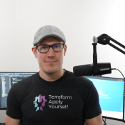
Derek has worked in many environments ranging from an International Managed Hosting provider handling "actual metal" to Managed Service Providers to major training corporations. He has also started a Manufacturing Technology Provider utilizing Kubernetes and other cutting-edge tools. He currently works at Spacelift.io and his own training company morethancertified.com providing advocacy and training to all.
Sarah Newman is currently working with embedded Linux. Formerly she ran a VPS hosting company and designed FPGA firmware using VHDL. She had her first taste of programming computers at the ripe age of 5 writing a number guessing game and reading books of games written in basic.

As Head of AI Community Engagement, Dave runs events such as hackathons that help developers learn how to use GenAI developer tools like LLMs and MongoDB Vector Search. Dave graduated from Cal Poly: SLO and has worked in developer relations at companies like PayPal, Strikeiron, Redis, Intel, Traceable, Dremio, Harness and now MongoDB. Dave gained modest notoriety when he proposed to his girlfriend in the book "PayPal Hacks"

Duane O’Brien is an independent researcher focused on open source funding and sustainability. He loves driving this passion through collaboration and conversation. Duane is a force of chaotic good, using his high stats in intelligence and charisma to advocate for the open source community.
Ray is a Community Manager at PingCAP where he is helping to grow the TiDB community. Prior to PingCAP, Ray managed open source communities at Cube Dev, GitLab and the Linux Foundation. Ray has been a speaker at open source conferences such as All Things Open, Community Leadership Summit, FOSDEM, GitLab Commit, Open Source Summit, and SCaLE.
Ray lives in Sunnyvale, CA with his wife and daughter and all three are loyal season ticket holders of the Bay FC women's soccer team.
As a Senior Solutions Architect at TriggerMesh, Chris helps customers accelerate their shift to event-driven architectures with open-source, API-based integration on Kubernetes and Knative. Chris is an AWS Certified DevOps Engineer and earned his BS degree in Computer Science from the University of Maryland. Outside of work, Chris enjoys finding great restaurants and increasing his max deadlift (currently 555 lbs).
Steve is obsessed with making tech human, and leveraging it to deliver continuous value.
He shows teams how to use simple tools and techniques to make big changes. For the past 20 years, his focus has been on sharing mapping techniques to guide ambitious and struggling teams towards their true north.
He’s a former startup CTO, agency consultant, systems and release engineer, finance IT manager, tech support phone jockey, and pizza maker. All focused on the flow of value, all...

Christophe has been working with PostgreSQL since 1997. He is the CEO of PostgreSQL Experts, Inc.
Pep has a broad experience in several database platforms, but in recent years he has focused on MySQL. His work abides by the motto of Mission Control at NASA: “Tough and competent”. Tough means you are accountable for what you do or fail to do, it means compromise and responsibility. Competent means that you take nothing for granted and you must never be found short in knowledge and skills. This is how Pep feels and lives database management. He is also interested in applying Lean culture...

Brian Proffitt is currently the Senior Manager, Community Outreach team for Red Hat's Open Source Program Office. A long-time member of the free and open source software community, Brian is the author of several books on Linux, iOS, and other odd operating systems, as well as former technology journalist from ReadWrite, ITworld, LinuxPlanet, and Linux Today.
Binu Ramakrishnan is a security engineering lead at NVIDIA, responsible for the end to end security of the GPU/Kubernetes cloud platform used for running DL workloads. Previously, Binu has worked at Yahoo for ten years, leading product security engineering and engagement programs and built Internet-scale secure systems. As an avid coder, he has authored and open sourced various security related tools. Binu is also the co-author of IETF RFCs related to email security.
Atom is a student at UC Merced pursuing a degree in Applied Mathematics with an emphasis on Computer Science. He is currently the president of UC Merced ACM chapter. He’s interested in cyber security, Linux, programming, and Basketball. He has given talks about PKI, Linux security, Linux installs as the ACM Cybersecurity SIG lead.
Marie Curie Ramirez is a high school student at Bishop Amat High School with a interest in Cybersecurity and Linux. She's been competing in cyber defense competitions for several years and plans to pursue a degree in Mathematics and Computer Science. She has published online articles on cyber security topics such as "Overcoming a girl's struggle in Cyber Security", "Staying safe by understanding common cyber threats", and "How secure is your password?...

Sriram Ramkrishna spent over 22 years working in open source communities building coalitions to solve problems, working as a connector between projects and help supporting open source communities. Sri uses his background in his role as Principal Ecosystems Engineer for ITRenew/Sesame in corporate open source communities like the Open Compute Project, CNCF, and the Linux Foundation.

Kyle Rankin is a security and infrastructure expert with over two decades of professional Linux experience. He is the author of How To Write A Tech Book, The Best of Hack and /: Linux Admin Crash Course, Linux Hardening in Hostile Networks, DevOps Troubleshooting, The Official Ubuntu Server Book, Third Edition, Knoppix Hacks, 2nd Edition, and Ubuntu Hacks, among other books. Rankin was an award-winning columnist and tech editor for Linux Journal, and speaks frequently on Free and Open Source...
Robert L. Read was first paid as a programmer at the age of 16. He has a PhD in Computer Science from the University of Texas at Austin. He wrote the essay “How to Be A Programmer” (https://github.com/braydie/HowToBeAProgrammer). After a career as a director/architect at medium size software firms, he became a Presidential Innovation Fellow in the Obama administration and co-founder 18F with the federal government. He then founded...

Justin Reock is the Deputy CTO at DX (getdx.com), and is an outspoken speaker, writer, and software practice evangelist. He has over 20 years of experience working in various software roles and has delivered enterprise solutions, technical leadership, and community education on a range of topics. After a fifteen year career in software development, Justin now focuses on helping businesses create better throughput by optimizing the developer experience. Much of his work can be found online...

Rob Richardson is a software craftsman building web properties in ASP.NET and Node, React and Vue. He’s a Microsoft MVP, published author, frequent speaker at conferences, user groups, and community events, and a diligent teacher and student of high quality software development. You can find this and other talks on his blog at https://robrich.org/presentations and follow him on twitter at @rob_rich.
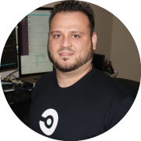
Angel started his career as an US Air Force Space Systems Operations specialist in Cape Canaveral AF Station where he realized his passion for technology and software development. He has extensive experience in the private, public and military sectors and his technical experience includes military/space lift operations, software development, SRE/DevOPs engineering. He also has a wealth of experience in defense and federal sectors such as contracting, information systems security and...
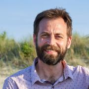
Mark Roden is VP of Data at Crexi, a commercial real estate company dedicated to connecting brokers and investors. He is also the CEO of Tetra Bio Distributed, a non-profit dedicated to the design and creation of open source medical hardware. Tetra was founded within a few months of the outbreak of COVID-19, and our devices center around making medical devices more accessible to makers and anyone interested in medical technology.
Steven started working on the Linux kernel in 1998, and become a professional (paid) kernel developer in 2001. He's one of the original authors of the PREEMPT_RT patch, that turns Linux into a hard real-time OS, and is also the original creator and current maintainer of Ftrace, the official tracer of the Linux kernel. Steven is still very active in developing new features for Linux as well as getting involved in the community. Steven has given over 80 talks around the world, has been on...

Alexander is a Principal Security Engineer at Amazon Web Services (AWS), leading RDS security team.
Alexander worked with MySQL since 2000 as DBA and Application Developer. Alexander was working as MySQL principal consultant/architect for over 15 years, started with MySQL AB in 2006 (company behind MySQL database), Sun Microsystems, Oracle and then Percona. He helped many customers design large, scalable and highly available MySQL systems, optimize MySQL performance and improve MySQL...
In 2016, Guinevere Saenger transitioned from being a full-time professional pianist to a career in tech. To do so, she obtained a spot at the highly competitive Ada Developers Academy in Seattle, a year-long, tuition-free, bootcamp-style software development training program for women and nonbinary people making a mid-life career switch into tech. As part of her training, Guinevere interned at Samsung SDS on the Cloud Native Computing Team, where, after graduating in July 2017, she accepted...
Esty Scheiner CISSP is a recent SecureSet graduate currently working as a Security Engineer working at Invoca. She is a driven continuous learner with a creative approach to managing security, privacy, and risk. Recently she contributed to the Brakeman project and created a continuous security Integration for applications empowering modern development teams to find, fix and prevent vulnerabilities related to source code, open source libraries, secret management and cloud configuration.

Jennifer started Sound Data in 2008 after ten years building research databases at the University of Washington. She has built a wide variety of data systems for clients in science and engineering. She holds a MS from the University of Washington and is a certified Oracle Applications Developer.
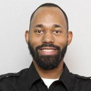
Brian Scott is an Manager of Systems Reliability Engineering at The Walt Disney Company, focusing on Customer SRE, Public Cloud, Automation, and promoting SRE best practices across the Enterprise. Supporting small and large applications in the cloud across all Disney segments. Has a strong passion for Golang and containerization and bringing the best experience to Disney’s guests.

Jeffrey (@jeefy) is a Principal Developer Experience Engineer at the CNCF, with a focus on improving community and project automation. Before that, he’s worked at Red Hat and the University of Michigan focusing on Cloud Native technologies and CICD patterns. Jeffrey has been a contributor to upstream Kubernetes, helping in SIG-Contribex, SIG-Release, and SIG-UI. He passionately advocates for open source development and recognizing and alleviating burnout.
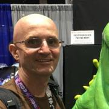
John has over 30 years of experience in the aerospace industry as a software developer, systems administrator, systems integrator, and systems security engineer. John is a retired U.S. Navy Commander where he served as an Information Corps Warfare Qualified officer. John currently serves as an adjunct faculty member at a local community college, teaching courses in ethical hacking, Linux operating system, and computer forensics. He has also served as a mentor instructor for SANS. A graduate...

Eduardo is an entrepreneur and software engineer. He is currently one of the Fluentd project maintainers and creator of Fluent Bit, a lightweight Logs and Metrics processor. He also is the founder of Calyptia (the Fluent company).
Axel works by day as a solution architect for Element, helping grow open communications using the Matrix protocol in a siloed world. By night, he's a volunteer for La Quadrature du Net, a French non-profit defending fundamental freedoms in a digital world. He previously worked on open source security as part of the Red Hat Office of the CTO's Emerging Technologies Security team, where he worked on projects such as Enarx, Keylime and sigstore. He has studied economics, “done agile...
Eric is a 30+ year enterprise software engineer with over a decade of consulting in the DevOps space. He is a Docker Captain, has been an OSS contributor since the mid-2000s, and holds CKA, CKAD, and CKS certifications from the CNCF.

I'm a software engineer on the Infrastructure team at Neuralink. We're building a medical device to help folks with spinal cord injuries control their computer with their thoughts alone. I love working on tough distributed systems problems, and learning from my team and the community! I have been a fond user and contributor to Open Source for over 15 years, with no plans on stopping anytime soon.
Previously, I was the Site Reliability Engineering tech lead at Slack, the ...
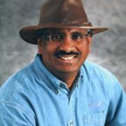
Raghavan "Rags" Srinivas (@ragss) is a Developer Advocate/Architect at Datastax to help developers build scalable and available systems. With a background in app development and infrastructure, he has gravitated towards distributed systems. He specializes in Cloud Computing, specifically multi-cloud - He worked on K8S and has helped customers with implementations.
Rags brings over 30 years of hands-on software development experience and is on a...
__q_itok=f6-o4elr.jpg)
I’m Zoe Steinkamp, a Developer Advocate at ClickHouse, with a strong foundation in front-end software engineering. My mission is to empower developers by enhancing their experience with ClickHouse’s high-performance database and real-time analytics capabilities. I also have a growing interest in data science. In my spare time, I love to travel and tend to my garden. Let’s connect on LinkedIn—I’m eager to exchange insights and knowledge at both virtual and in-person events.

Dave Stokes is an open-source software and database fan. He has worked at companies ranging alphabetically from the American Heart Association to Xerox, has three college degrees, enjoys riding his Honda Goldwing motorcycle, lives in North Texas, and started with UNIX in the Version 7 days. He is the author of MySQL & JSON - A Practical Programming Guide, which is available at Amazon.com
Matty Stratton is a Staff Developer Advocate at Pulumi, founder and co-host of the popular Arrested DevOps podcast, and the global chair of the DevOpsDays set of conferences.
Matty has over 20 years of experience in IT operations and is a sought-after speaker internationally, presenting at Agile, DevOps, and cloud engineering focused events worldwide. Demonstrating his keen insight into the changing landscape of technology, he recently changed his license plate from DEVOPS to KUBECTL...

Patrick Swartz has been a Linux and opensource advocate since the mid-1990s working with start-ups to Fortune 100 companies to develop opensource strategies. As a father of 8 kids he continually looks for ways to engage his kids in the opensource world.
Jim Tario is a Site Reliability Engineer on the Diablo team at Blizzard Entertainment, where he works on the reliability of the infrastructure and systems. At Blizzard, he was one of the first interns in the Service Engineering team (now SRE) and progressed to Senior through this 5-year tenure.
Shimon established and managed the Software Engineering Infrastructure department for 400 engineers at ironSource. Also as an AWS Community Hero, Shimon runs the largest AWS user-group worldwide and an avid speaker at conferences. Today, Shimon is the CEO & Co-Founder at Datree, an automated policy enforcement solution for Kubernetes. It helps to prevent misconfigurations from code through production. Datree allows to seamlessly manage and enforce policies across Developers and DevOps...
Alyssa Tong is a long-time Jenkins contributor. Currently, she is a member of the Jenkins Advocacy and Outreach SIG. She drives and manages Jenkins participation in community events and conferences like Google Summer of Code, FOSDEM, SCaLE, DevOps World, and ...
Working on database-backed, internet-based systems for over a decade, Robert is a published author and long-time open source contributor, having been recognized as a major contributor to the PostgreSQL project for his work over the years. An international speaker on databases, open source, and managing web operations at scale, he occasionally blogs at https://xzilla.net.
Karsten has over 20 years leading and working hands-on in a range of Open Source projects in the private, public, academic, research, and non-profit spaces. His nearly three decade career in IT includes almost six years in three professional service organizations. Karsten is founder, partner, and Chief Community Architect for the consultancy Open Community Architects (OCA) https://OpenCommAr.ch

Mark Waite is a long-time Jenkins contributor. He is one of the maintainers of the Jenkins git plugin and the Jenkins git client plugin. He's active in the Jenkins Platform Special Interest Group and in Jenkins documentation. He's fascinated by software development and especially interested in software testing.
Daniel Walsh has worked in the computer security field for over 35 years. Dan is a Consulting Engineer at Red Hat. He joined Red Hat in August 2001. Dan leads the Red Hat Container Engineering team since August 2013, but has been working on container technology for several years. Dan currently focusess on the CRI-O Container Runtime, Buildah for building container images, containers/storage and containers/image. Dan has made many contributions to the Docker project. Dan has also developed a...
Tony is a Senior Solutions Architect at CloudBees and a specialist in Software Delivery Automation (SDA). He has designed and implemented DevOps solutions in many technical sectors including, Software, Financial/Insurance, Defense, Health Care. His previous experience as a long time customer of CloudBees solutions gives him the experience and knowledge to help CloudBees provide an SDA platform that addresses real world problems and delivers value to the customer.
Mark Wong is a Software Development Engineer at EDB and is a PostgreSQL Major Contributor. He first introduced himself to the PostgreSQL community in 2003 with open source benchmarking kits and performance data. Since then, he has continued to contribute to various aspects of the community such as a Google Summer of Code mentor, Conference Organizer, Portland PostgreSQL Users Group Co-Organizer, PostgreSQL Fundraising Group Member, and a Director on the Board of the United States PostgreSQL...

Richard has been using PostgreSQL since v. 7.4 in 2003. He is a Principal Support Engineer at EnterpriseDB, providing technical support to DBAs and developers around the world, and works with many clients ranging from private corporations to government organizations and financial institutions.
Matt Yonkovit has been in the Open Source Database Community for over 15 years working for MySQL AB, Sun Microsystems, Mattermost, and Percona. Matt has held technical roles, management, and executive roles (including Chief Customer Officer, Chief Experience Officer, VP of Global Services) serving the open source community. He is currently serving as Percona's head of Open Source Strategy(the HOSS), focused on helping developers, architects, and DBA's get the most out of their...

Anita Zhang is the software engineering manager of Meta's Linux Userspace team. Her team connects Meta's infrastructure with the open source community. She is active on the systemd project and continues to support systemd at Meta as part of their userspace efforts.
Chip Zoller is a technologist, maintainer, and contributor to the Kyverno project where his primary focus is on process, enablement, documentation, automation, policy design and authoring, and community. Chip's background is as an architect, engineer, and cloud native consultant having spent over twenty years fulfilling roles spanning the gamut in companies from small to large, most recently Dell Technologies where he was a lead system architect for edge computing. Prior to dedicating...